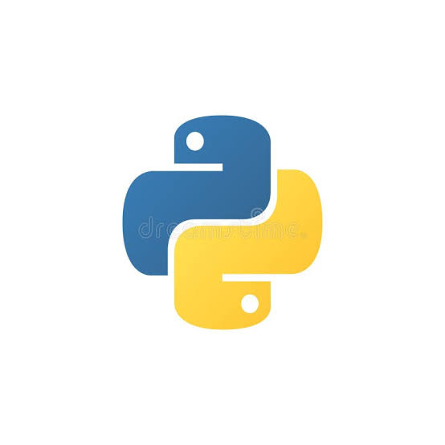

O desenvolvimento de software é o processo sistemático de concepção, especificação, projeto, programação e manutenção de aplicações e sistemas computacionais. Em um mundo cada vez mais conectado, a construção de soluções digitais tornou-se a espinha dorsal de praticamente todas as indústrias modernas.
Para construir sistemas robustos, é fundamental seguir um ciclo estruturado. Isso envolve desde a análise de requisitos inicial até a entrega contínua em produção. Quando os requisitos não são bem definidos, o projeto corre o risco de entregar algo diferente das reais necessidades do usuário, o que gera retrabalho e desperdício de recursos.
Além da etapa de codificação, a fase de testes automatizados garante que novos recursos não quebrem funcionalidades já existentes. A integração de boas práticas desde o início garante maior escalabilidade e manutenibilidade a longo prazo.
A escolha das ferramentas e linguagens adequadas varia conforme os objetivos do projeto. O uso de Programação Orientada a Objetos (POO) e arquiteturas bem definidas auxilia na organização do código, permitindo que grandes equipes trabalhem em conjunto de forma eficiente. É preciso lembrar que não existe uma solução única para todos os problemas no ecossistema de tecnologia.
Escrever código funcional é apenas o primeiro passo; a verdadeira excelência está em criar um código limpo e legível. Utilizar padrões de projeto, manter uma documentação clara e realizar revisões de código constantes são hábitos essenciais para manter a saúde técnica de qualquer aplicação ao longo do tempo.
